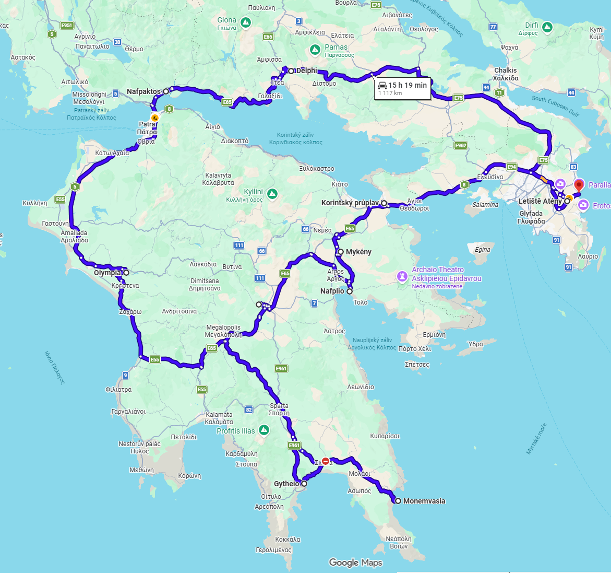

Roadtrip Itinerář – Athény a Peloponés (20.–29.9)
Kombinace antických památek, historických měst a pláží Peloponésu. Trasa propojuje Athény, Delfy, Nafpaktos, Olympii, Gytheio, Monemvasii, Nafplio, Hydru a pobřeží u letiště. Program je navržen jako realistický roadtrip s rozumnými přejezdy, časem na památky, koupání i večerní atmosféru řeckých měst.
Přehled trasy
Mapa trasy

Ubytování + GPS / Waze
20–22.9 – Athény
Petmeza16
16 Petmeza
Athens 11743, Greece
📍 GPS ubytování: 37.9656754, 23.7290032
🅿 Parkování pro vozidlo:
STASY Parking Syngrou-Fix
Leof. Andrea Siggrou, Athina 11743, Greece
📍 GPS parkování: 37.963611, 23.725556
22–23.9 – Nafpaktos
Pel House
2 Dimokratias
Nafpaktos 30300, Greece
📍 GPS ubytování: 38.3898993455482, 21.8230339157301
23–25.9 – Gytheio / Mavrovouni
Areti & Maria Apartments
Mavrovouni
Gythio 23200, Greece
📍 36.7355395205417, 22.5652956962585
25–28.9 – Nafplio
Three Graces in Nafplio
31 Mikras Asias, 3rd Floor
Nafplio 21100, Greece
📍 37.5721172, 22.80834
28–29.9 – Artemida
Sky Stop Studios Νο1 Artemida Near Airport
Agion Anargiron 9
Artemida 19016, Greece
📍 GPS ubytování: 37.9460349364263, 24.0065164179089
✈️ Ubytování vhodné pro poslední noc před odletem – blízko letiště.
DEN 1 – 20.9.2026 (neděle) – přílet Athény
Plaka & Anafiotika


ČAS 18:25–20:30
🅿 PARKOVÁNÍ není potřeba – pěšky
POPIS Plaka je nejstarší čtvrť Athén rozkládající se pod Akropolí. Kombinuje historické domy, úzké dlážděné uličky, taverny a malé obchody. Součástí je Anafiotika, malebná oblast postavená ve stylu kykladských ostrovů s bílými domky a výhledy na město.
⏱ PROGRAM Anafiotika, večerní Plaka, výhledy na osvětlenou Akropoli, večeře
Monastiraki – volitelně bez galerie
ČAS 20:30–21:15 podle energie
POPIS Pokud bude dost energie, lze večer pokračovat krátkou procházkou na náměstí Monastiraki. Večer nabízí pěkné výhledy na nasvícenou Akropoli, restaurace a živou atmosféru centra Athén.
💡 Alternativa Monastiraki lze bez problémů navštívit také druhý den při přesunech mezi Agorou, Syntagmou a večerním Lycabettem.
nocleh Athény – Petmeza16, 16 Petmeza, Athens 11743, Greece
📍 GPS 37.9656754, 23.7290032
DEN 2 – 21.9.2026 (pondělí) – hlavní Athény
Národní zahrada


ČAS 08:50–09:30
POPIS Příjemná ranní procházka ve stínu Národní zahrady. Není potřeba vstupné, projdete se směrem k Syntagmě.
💰 VSTUPNÉ zdarma
Syntagma
ČAS 09:30–09:45
POPIS Krátká zastávka na hlavním athénském náměstí. Pokud bude probíhat, možnost sledovat výměnu stráží před parlamentem.
Acropolis Museum


🚶 PŘÍCHOD 10:25
POPIS Moderní muzeum s originálními nálezy z Akropole včetně soch a částí výzdoby Parthenonu. Expozice přirozeně navazuje na návštěvu Akropole.
⏱ DÉLKA NÁVŠTĚVY 10:25–12:00
💰 VSTUPNÉ cca 20 €
Ancient Agora → Monastiraki (volitelně)
ČAS 11:30–12:30
POPIS Možnost krátké návštěvy Agory a následně Monastiraki. Pokud budete chtít více odpočinku před Akropolí, lze tuto část vynechat.
Acropolis of Athens


🎟 VSTUP 16:00
ČAS 16:00–18:00
POPIS Akropole je nejvýznamnější památka Řecka a symbol antické civilizace. V 5. století př. n. l. zde za Perikla vznikly stavby jako Parthenon, Erechtheion a Propyleje.
Areopagus
ČAS 18:00–18:20
POPIS Skalnatý pahorek pod Akropolí spojený s apoštolem Pavlem, odkud je krásný výhled na Parthenon a okolní Athény. Vstup je zdarma, návštěva zabere přibližně 15–20 minut.
Anafiotika
ČAS 18:00–19:00
POPIS Malá čtvrť pod Akropolí připomínající kykladské ostrovy. Bílé domky a úzké uličky vytvářejí klidnější atmosféru po návštěvě Akropole.
Plaka / Monastiraki
ČAS 19:00+
PROGRAM Večeře a večerní atmosféra centra Athén podle energie.
nocleh Athény – Petmeza16
DEN 3 – 22.9.2026 (úterý) – Athény → Delphi → Nafpaktos
Delphi Archaeological Site


🅿 PARKOVÁNÍ parkoviště u památky
POPIS Delfy byly ve starověku považovány za střed světa a sídlo věštírny boha Apollóna. Areál leží na svahu pohoří Parnassos a spojuje významnou historii s výhledy.
⏱ DÉLKA NÁVŠTĚVY 2–3 h
💰 VSTUPNÉ cca 12 €
ODJEZD 13:30
Psani Beach + benátský přístav Nafpaktos


🅿 PARKOVÁNÍ u ubytování / městské parkování
POPIS Psani Beach je městská pláž s promenádou, kavárnami a možností krátkého koupání po přejezdu. Benátský přístav Nafpaktos je malý, kruhový a velmi fotogenický.
⏱ PROGRAM koupání, promenáda, večeře
nocleh Nafpaktos – Pel House, 2 Dimokratias, Nafpaktos 30300, Greece
📍 GPS 38.3939675500527, 21.8308499528541
🅿 Parkování: Θ. Νόβα 4, GPS 38.3936526, 21.8357227
DEN 4 – 23.9.2026 (středa) – Nafpaktos → Olympia → Gytheio / Mavrovouni
Olympia


🅿 PARKOVÁNÍ parkoviště u památky
POPIS Olympia je místem zrodu starověkých olympijských her. Areál zahrnuje stadion, chrámy i posvátný okrsek Altis.
⏱ DÉLKA NÁVŠTĚVY 2 h
💰 VSTUPNÉ cca 12 €
ODJEZD 12:30
večer přístav Gytheio nebo Mavrovouni Beach
⏱ PROGRAM večeře, odpočinek
nocleh Gytheio / Mavrovouni – Areti & Maria Apartments, Mavrovouni, Gythio 23200, Greece
📍 GPS 36.7355395205417, 22.5652956962585
DEN 5 – 24.9.2026 (čtvrtek) – Mavrovouni Beach + Limeni
Mavrovouni Beach


🚶 ODCHOD ubytování 9:00
PŘÍCHOD Mavrovouni Beach 9:05
🅿 PARKOVÁNÍ není potřeba – pěšky
POPIS Dlouhá pláž u Gytheia s čistým mořem a dostatkem prostoru. Díky poloze přímo u ubytování je ideální na klidné dopolední koupání bez přejezdů.
⏱ PROGRAM koupání, procházka po pláži, káva
⏱ DÉLKA POBYTU cca 3 h
ODCHOD 12:00
PŘÍCHOD ubytování 12:05
oběd a odpočinek
Limeni


🅿 PARKOVÁNÍ u pobřeží / veřejné parkování
POPIS Limeni patří mezi nejkrásnější pobřežní vesnice na Peloponésu. Kamenné domy stojí přímo nad tyrkysovou vodou a vytvářejí velmi fotogenickou scenérii.
⏱ PROGRAM procházka, koupání, káva nebo večeře
⏱ DÉLKA POBYTU 2–3 h
ODJEZD 18:00
nocleh Gytheio / Mavrovouni
DEN 6 – 25.9.2026 (pátek) – Gytheio → Valtaki Beach → Monemvasia → Nafplio
Valtaki Beach – vrak Dimitrios


🅿 PARKOVÁNÍ zdarma u pláže
POPIS Vrak nákladní lodi Dimitrios je symbolem oblasti Gytheio. Loď zde uvázla v roce 1981 a postupně se stala jedním z nejfotografovanějších míst jižního Peloponésu.
⏱ DÉLKA NÁVŠTĚVY 30–45 min
💰 VSTUPNÉ zdarma
ODJEZD 9:30
Monemvasia


🅿 PARKOVÁNÍ parkoviště pod městem
POPIS Středověké město na skalním ostrově spojeném mostem s pevninou. Kamenné uličky, kostely, historické domy a výhledy na moře vytvářejí jednu z nejhezčích atmosfér Peloponésu.
⏱ DÉLKA NÁVŠTĚVY cca 4 h
💰 VSTUPNÉ do starého města zdarma
⏱ PROGRAM procházka starým městem, oběd, výhledy
ODJEZD 15:00
nocleh Nafplio – Three Graces in Nafplio, 31 Mikras Asias, 3rd Floor, Nafplio 21100, Greece
📍 GPS 37.5721172, 22.80834
DEN 7 – 26.9.2026 (sobota) – Argolida
Mycenae


🅿 PARKOVÁNÍ parkoviště u památky
POPIS Mykény byly významným centrem mykénské civilizace v době bronzové. Nejznámější památkou je monumentální Lví brána a kruhové hrobky.
⏱ DÉLKA NÁVŠTĚVY 1–1,5 h
💰 VSTUPNÉ cca 12 €
ODJEZD 10:30
Epidaurus Theatre


🅿 PARKOVÁNÍ parkoviště u památky
POPIS Divadlo v Epidauru patří mezi nejlépe dochovaná antická divadla na světě. Proslulo mimořádnou akustikou, díky které je zvuk z jeviště slyšitelný i v horních řadách.
⏱ DÉLKA NÁVŠTĚVY 1 h
💰 VSTUPNÉ cca 12 €
ODJEZD 12:30
🏖 pláž u Nafplio
⏱ PROGRAM koupání, odpočinek
večer staré město Nafplio
nocleh Nafplio
DEN 8 – 27.9.2026 (neděle) – Nafplio / Hydra
Nafplio


PŘÍCHOD dopoledne / večer dle programu
🅿 PARKOVÁNÍ u ubytování / městské parkování
POPIS Nafplio patří mezi nejhezčí města Řecka a bylo prvním hlavním městem moderního řeckého státu. Dominantou je pevnost Palamidi nad městem a ostrovní pevnost Bourtzi v přístavu.
Karathona Beach


🅿 PARKOVÁNÍ podle zvolené varianty
POPIS Jedna z nejpříjemnějších pláží v okolí Nafplia. Je vhodná na delší koupání, oběd i odpočinek.
⏱ PROGRAM koupání, oběd, odpočinek
Arvanitia Beach


🅿 PARKOVÁNÍ není potřeba – pěšky z centra
POPIS Malá městská pláž přímo pod skalami starého města. Rychlá a pohodlná varianta bez delšího přejezdu.
Palamidi Fortress


🅿 PARKOVÁNÍ parkování u pevnosti / možnost pěšího výstupu
POPIS Velká benátská pevnost nad městem s výhledem na Argolský záliv a staré město Nafplio.
Varianta – Hydra
Hydra


POPIS Hydra je ostrov bez aut s autentickou atmosférou. Přístav obklopují kamenné domy a většina pohybu po ostrově probíhá pěšky nebo na oslech.
⏱ PROGRAM přístav, procházka, koupání, oběd
nocleh Nafplio
DEN 9 – 28.9.2026 (pondělí) – Nafplio → Ancient Corinth → Korint → Corinth Canal → Artemida
Ancient Corinth – Béma apoštola Pavla


🅿 PARKOVÁNÍ parkoviště u archeologického areálu Ancient Corinth
ČAS cca 10:15–11:35
POPIS Hlavní část návštěvy věnujte antickému fóru, chrámu Apollóna a především Bémě – kamenné řečnické tribuně uprostřed římského fóra. Právě toto místo je tradičně spojováno s událostí ze Skutků 18, kdy byl apoštol Pavel přiveden před římského místodržitele Gallia.
✝ PAVEL V KORINTU Pavel zde podle Skutků 18 působil přibližně 18 měsíců. Béma nebyla kostel ani oltář, ale veřejná tribuna, odkud městští představitelé promlouvali k obyvatelstvu a řešili veřejné záležitosti.
CO VIDĚT Béma ⭐ → římské fórum ⭐ → chrám Apollóna → Lechaionská cesta → zbytky okolních veřejných staveb.
💰 VSTUPNÉ podle aktuálního ceníku archeologického areálu
Lechaionská cesta (Lechaion Road)


ČAS součást návštěvy Ancient Corinth, cca 10–15 min
POPIS Lechaionská cesta byla hlavní antická komunikace spojující centrum Korintu s přístavem Lechaion u Korintského zálivu. Vedla od fóra monumentální branou a podél ní se nacházely obchody, kolonády a další veřejné stavby.
👣 Dnes je její dochovaná část přímo v archeologickém areálu, takže kvůli ní nemusíte dělat žádnou další zastávku.
Moderní Korint – kostel sv. Pavla


🅿 PARKOVÁNÍ krátké zastavení v centru podle dostupnosti
ČAS cca 11:45–12:05
POPIS Krátká zastávka u moderního metropolitního kostela zasvěceného apoštolu Pavlovi, patronu města. Kostel byl postaven ve 30. letech 20. století na místě staršího chrámu zničeného při zemětřesení v roce 1928.
✝ Je to doplnění návštěvy Ancient Corinth: nejprve místo tradičně spojované s Pavlovým působením v antickém městě, potom moderní kostel zasvěcený Pavlovi.
Korintský průplav


🅿 PARKOVÁNÍ krátké zastavení u vyhlídky / mostu
ČAS cca 12:20–12:50
POPIS Korintský průplav prochází úzkou skalní soutěskou a spojuje Korintský záliv s Egejským mořem. Z mostu je dobře vidět hluboký zářez do skály i lodní provoz, pokud právě nějaký proplouvá.
📸 Ideální krátká zastávka na fotografie – po návštěvě antického Korintu už je to poslední zastávka na Peloponésu.
💰 VSTUPNÉ zdarma
Artemida


🅿 PARKOVÁNÍ u ubytování
POPIS Artemida je pobřežní oblast východně od Athén, vhodná na poslední noc před odletem. Po přejezdu z Peloponésu už následuje jen odpočinek, případně koupání a večeře u moře.
🏖 PROGRAM ubytování → koupání / procházka po pobřeží → večeře u moře
nocleh Artemida – Sky Stop Studios Νο1 Artemida Near Airport, Ekatis 11, Ground Floor, Artemida 19016, Greece
📍 GPS 37.9460349364263, 24.0065164179089